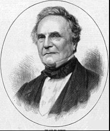
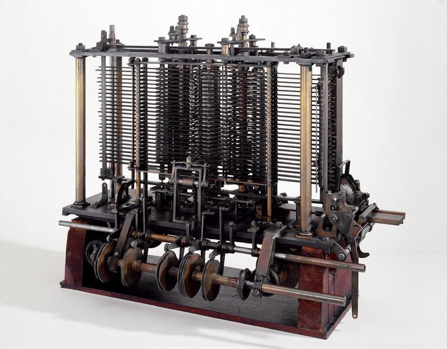
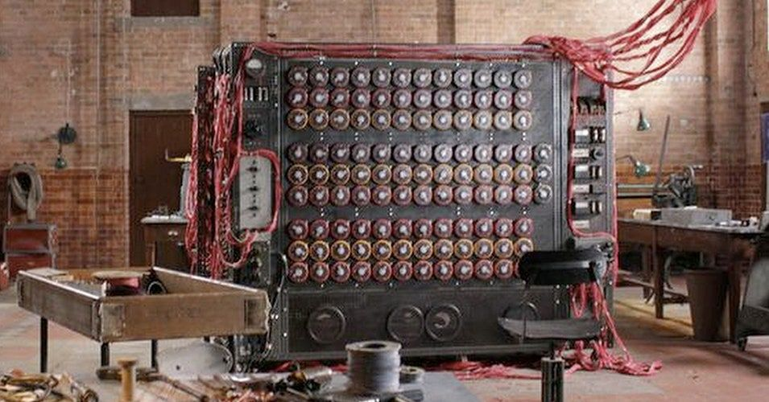

PENEMU KOMPUTER
Charles Babbage memang sering kali disebut sebagai penemu komputer. Di balik itu, ada beberapa nama ilmuwan hebat lain yang berjasa terhadap sejarah perkembangan komputer.
Mulai dari komputer berukuran raksasa yang memenuhi satu ruangan hingga kini kita kenal gadget laptop, sejarah komputer memang cukup panjang, gengs. Kalau kamu mencari siapa penemu komputer pertama, Google akan memberikan beberapa nama ilmuwan hebat. Namun, yang menjadi sorotan utama nih, Charles Babbage, banyak disebut oleh beberapa sumber sebagai penemu komputer pertama. Siapa penemu yang sebenarnya dan bagaimana, sih, sejarah komputer dari masa ke masa?
Siapa Penemu Komputer?
Charles Babbage, Ada Lovelace, dan Alan Turing, masing-masing memiliki kontribusinya dalam sejarah komputer. Tiap penemuan berpengaruh terhadap perkembangan penemuan lain. Yuk, simak ceritanya berikut!
Charles Babbage Merupakan seorang ilmuwan dan matematikawan Inggris, Charles Babbage memulai penemuannya dari rasa keingintahuan untuk memecahkan perhitungan matematika secara lebih cepat. Awalnya, Babbage membuat sebuah kalkulator kecil untuk hitungan matematika hingga delapan desimal. Lalu, pada 1823 pemerintah Inggris memberikan bantuan finansial untuk mengembangkan alat serupa, namun lebih canggih.
Dari sini, Difference Engine pertama kali dikenal. Mesin ini mampu menghitung hingga 20 desimal untuk soal penambahan dan pengurangan matematika sederhana. Cara kerjanya bersifat manual, yaitu dengan menarik tuai angka 1-9. Digit-digit tersebut nantinya menghasilkan hitungan sesuai dengan persoalan yang diberikan.
Lanjut dari penemuan tersebut, Babbage mengembangkan Analytical Engine. Mesin ini dapat menyimpan data sebanyak 1.000 angka dalam 50 digit, yang menjadikannya sebagai komputer dengan kapasitas penyimpanan terbesar di era itu. Memiliki empat komponen penting, cara kerja mesin ini merupakan awal dari komputer digital saat ini. Di dalamnya mencakup mesin input, pemrosesan (serupa dengan CPU), memori penyimpanan data, dan konsep pencetakan data.
Ada Lovelace
Kontribusi Lovelace berkesempatan untuk menerjemahkan konsep Analytical Engine milik Babbage ke Bahasa Prancis bersama dengan insinyur dan matematikawan Italia, Luigi Federico Menabrea. Dari hasil pemikiran tersebut, Lovelace menjelaskan potensi mesin Babbage untuk mengerjakan perhitungan yang lebih rumit dengan konsep angka Bernoulli. Selain itu, ia juga menjelaskan tentang potensi mesin Babbage dalam memproses hal selain dalam bentuk angka, seperti huruf alfabet.
Alan Turing
Pada 1936, Alan Turin membuat sebuah konsep penelitian tentang sebuah mesin yang dapat menjawab semua pertanyaan, bahkan bukan yang berkaitan dengan hitungan aritmatika. “On Computable Numbers, with An Application to The Entscheidungsproblem”, menjabarkan konsep algoritma mutakhir kala itu beserta perhitungan mekanik untuk pemecahan masalah yang diberikan.
Mesin-mesin terdahulu, hanya mampu menjawab pertanyaan seputar angka dan matematika. Namun, The Universal Turing Machine dapat menerjemahkan berbagai persoalan ke dalam logika dan huruf. Mesin buatan Alan Turing ini berhasil menjawab kode Enigma sebagai simbol komunikasi militer Jerman saat Perang Dunia II. Sistem kerja mesin Turing mampu membaca strategi perang yang direncanakan. Pada akhirnya, hal ini berdampak pada keselamatan ribuan jiwa korban perang saat itu.
*psst kalau kamu masih penasaran gimana cerita lengkap tentang Alan Turing, coba, deh, tonton The Imitation Game (2014) dengan pemeran utamanya, Benedict Cumberbatch (yes, the Doctor Strange from Marvel, he is).